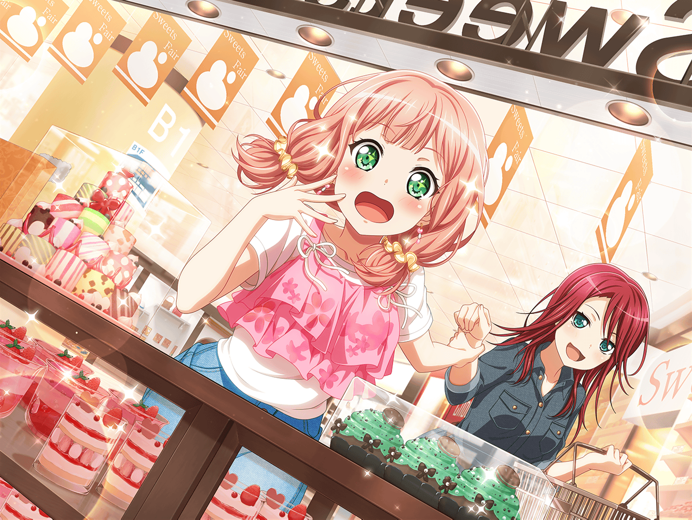

駅前
ひまり
巴、やっときた～！
遅いよ～！
巴
ゴメンゴメン！
ひまり
よーっし、今日はめいっぱい遊ぶぞ〜！
巴
で、どこに行くんだ？
ひまり
そうだなあ……巴、なにか案ない？
巴
あそこに色々チラシが置いてあるぞ、見てみないか？
行ってみたい場所とか見つかるかもしれないぞ
ひまり
ナイスアイディア、巴～！
それじゃあ、行ってみよ～っ！
ひまり
わ～！ 色んなお店のチラシがあるねっ！
どれから見ようかなー？
巴
（へー、今ショッピングモールの本屋で、
写真集フェアやってるのか……）
ひまり
あ、隣町に新しい喫茶店できたんだって！
駅前のショップで休日フェア！？ 気になる～！
巴は何か気になるやつ、あった？
巴
え～っと……
いや、ひまりの行きたいところでいいよ
ひまり
りょーかい！
それじゃしゅっぱーつ！

４時間後
駅前
ひまり
は～、楽しかったねー！
巴
だな。
たまにはちょっと遠くに出てみるのもいいな
巴
それに喫茶店の通りに、
美味しそうなラーメン屋も見つけられたし！
ひまり
ふふーん、チラシを見つけた私に、感謝するのだ～！
巴
ははー、ありがとうございますひまり様～
ひまり
はっはっは～！
……よかった、巴が元気そうで……あっ！
巴
あははっ、やっぱり今日は、
アタシのこと心配して誘ってくれたんだな
ひまり
ばれてたの！？ いつから！？
巴
実は待ち合わせの時から、
そんな気はしてたんだよな
ひまり
うう……そんな最初から
お見通しだったなんて、なんか悔しい……
巴
アタシはひまりの幼馴染なんだぞ？ そのくらいわかるって！
巴
……けど、ありがとな。
今日のことも、この前のことも
ひまり
えっ？
巴
あこと仲直りできたのは、
ひまりや、みんなのおかげだ
ひまり
ううん、違うよ、巴。
あこちゃんと仲直りできたのは、
巴がちゃんと、あこちゃんと向き合ったからだよ
ひまり
私達はただ、巴が落ち込んでた時に、そばにいただけ
巴
向き合えたのはみんなのおかげだよ。
ほんとにありがと
ひまり
うんっ、どういたしまして！
けど今度もし何かあったら、すぐ相談してよ？
巴
あー……うん。できるだけな……
ひまり
できるだけじゃなくて絶対っ！
相談してくれなかったら、次は私が怒るからね〜？
巴
ひまりが怒るのか？
あははっ！ それは怖そうだな！
ひまり
もぉ〜！ 私は本気なんだからね！
巴
悪かった、悪かったって！
ああ、今度は気をつけるよ、ちゃんと相談する
ひまり
うんっ！
……さて、巴も約束してくれたし、
そろそろ次のお店に行こっか！
巴
ああ！ 次は、どこに行くんだ？
ひまり
本屋さん！
写真集フェア、気になってたんでしょ？
巴
……っ！
気付いてたのか？
ひまり
ふふんっ♪
私もたまにはやるでしょ～？
ひまり
それに私だって、巴の幼なじみだからね！
巴
あははっ！ だな！
ひまり
よーし、じゃあ行こーっ！